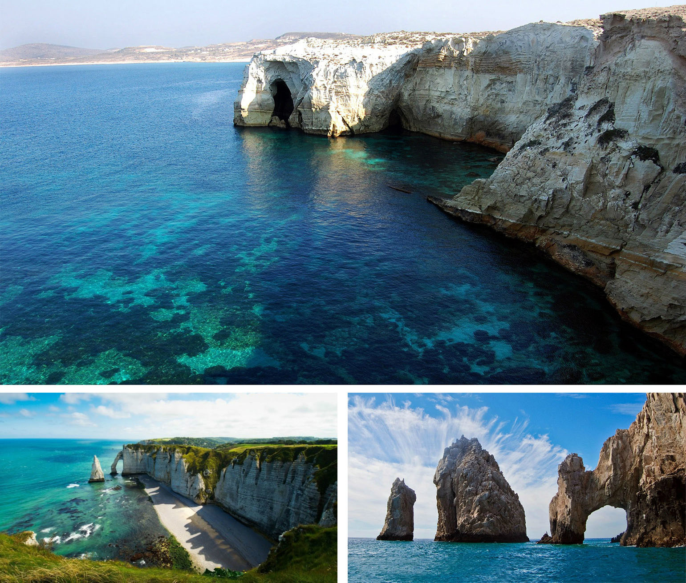
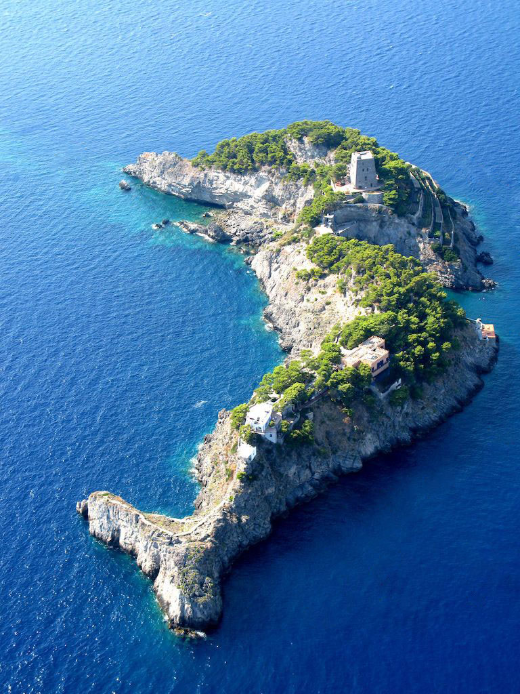

Веспиа́нов Фри́гольд
Правление: дуалистическая монархия;
Монарх: Базиль II Бенедикт Веспиа́н;
Подданство: либо по праву крови (его получают лица, имеющие расовые, языковые и этнокультурные черты титульной национальности), либо за заслуги перед государством (20 лет проживания на территории Фригольда либо 10 лет службы в Королевской армии);
Названия жителей: веспиа́не, веспиа́нец, веспиа́нка, фриго́льдцы, фриго́льдец, фриго́льдка;
Законы…
… для граждан:
- оружие: запрещено (СК5);
- налоги: высокие (СК4);
- гражданские свободы: слабо ограничены (СК3);
- магия: ограничена (СК4);
… для не-граждан:
- оружие: запрещено (СК6);
- налоги: высокие (СК4);
- гражданские свободы: ограничены (СК4);
- магия: запрещена (СК5);
Рабство: нет;
Язык: веспианский;
Культура: веспиано-имперская;
Площадь: больше, чем кажется (501 158 км²);
Население: готово к войне (16 037 069 чел.);
Валюта: флорин;
Столица: Ваэнта;
Крупные города: Ваэнта, Са́брие, Розенберг.
Вступление (и немного географии)
Веспианов Фригольд расположен на полуострове Кагара́н (весп. Kagarân “зеленые горы”) и на прилегающих к нему островах в южной части континента Иас. Омывается Веспиановым морем на западе, Южным — на востоке. Отделен от Королевства Висан Циановым морем. Имеет сухопутную границу с Королевством Ротус на северо-западе и с Королевством Эвестин на северо-востоке.
В состав Фригольда входит часть островов Южного архипелага, на которые приходится 20% площади всей страны.

Рельеф
Здешний ландшафт — это чередование скалистых гор, густонаселённых долин, островов, проливов и холмов. Фригольд славится своей природой: густо растущими смешанными и хвойными лесами, живописными долинами рек, экзотическими гротами, зелеными лугами и легендарным Розовым плато, на котором каждую весну расцветают сотни тысяч пурпурных вербен и фиолетовых фацелий.


Горные массивы занимают почти четверть поверхности территории страны.
Во Фригольде есть три знаменитых вершины, части горной цепи Василисков хвост: Солнечный пик (3110 м), Веспианово копьё (2713 м) и Сильвана (2340 м). По легенде, каждый, совершивший паломничество во все три места, обретает мудрость и долголетие.


Климат
Здесь теплый влажный климат с положительными среднегодовыми температурами, мягкой зимой, нежарким летом и повышенной влажностью. Самый холодный месяц — Тамуз (второй месяц лета), самый теплый — Тевет (второй месяц зимы).

Острова
- Сиза́льские острова — расположены на юго-востоке Цианового моря, отделены от Ире́мских островов Мире́йским проливом, от Фре́зских островов — проливом Ваэль и бухтой Эре́ра. Граничат с Королевством Виса́н на западе. Крупнейший остров — Сиза́ль.
- Фре́зские острова — расположены на востоке Цианового моря, отделены от материка Эдельским и Лазурным проливами. Крупнейший остров — Фре́з.
- Ире́мские острова — расположены юго-восточнее Фре́зских островов, выходят в мировой океан. Крупнейший остров — Ире́м.
- Эде́н — самый маленький из квадры крупных островов, находится у западного побережья Фригольда, выходит в Веспианово море, отделен от материка Тюлипским проливом.
Помимо Цианового моря, Фригольд и Виса́н разделены проливом Кеттос.
Краткая справка
Несмотря на свое давно уже независимое положение, Фригольд вынужден считаться со Второй Великой Империей Человечества. Во всяком случае, когда дело касается внешней политики. Хотя последнее время влияние Империи заметно уменьшилось — сказываются сепаратистские настроения на севере.
Касательно повседневной жизни Веспианов Фригольд достаточно консервативен: новое здесь принимают с неохотой. Это страна строгих законов, бюрократии и древних традиций. Даже правящий дом не меняется уже многие сотни лет. Хотя в последнее время стала набирать силу либеральная оппозиция. Некоторые считают, что это пойдет на пользу государству; другие придерживаются мнения, что это скорее навредит.
Во Фригольде нет рабства — все подданные Его Королевского Величества Базиля II Бенедикта признаются свободными — правда, его отменили чуть больше полувека назад. Это произошло при короле Августине I Миротворце.
Столицей Веспианова Фригольда является Ваэнта, крупный город на подступах к морю. В скором времени, она должна соединиться с Сен-Мартеном — главным портом страны.
Население
Все население Фригольда — люди.
Кроме веспианского, из языков распространены еще общий (морские провинции) и имперский (север страны). Местные жители в большинстве своем поклоняются Тэосу, богу света, и Кайе, богине моря.
Мужчины и женщины — все стройные и гибкие, кажется, аккуратность и изящество у них в крови. Они среднего роста со светлыми волосами и глазами. Рыжие и брюнеты встречаются редко, разве что в горах и на севере. Кожа обычно светлая, розоватая, хотя загорелые люди здесь на каждом шагу.
По одной из легенд, веспиане имеют такую внешность благодаря родству с эльфами, прибывшими сюда в древние времена. По другой же, только род Его Королевского Величества берет свое начало от Короля-из-за-моря Веспиана Прекрасного, который покорил полуостров и основал здесь государство тысячу лет назад. Иногда его называют человеком, а иногда эльфом…
Другие расы встречаются крайне редко. Почти все иностранцы во Фригольде — это торговцы из соседних государств и Империи.
Экономика, культура и тому подобное
Местные говорят, что Фригольд — родина текстильной промышленности и самых дорогих тканей во всем мире. Здесь выращивают хлопок, шелк и лен, а также производят невесомую органзу. Изящные платья из этих тканей стоят баснословных денег, но аристократки со всего света не скупятся на их приобретение. Они так же рады обладать какой-нибудь коралловой безделушкой, золотом колье или серебряной диадемой. А их мужья хотят отведать дорогих морских моллюсков: устриц и мидий.
И хотя Фригольд известен своими предметами роскоши это не основной заработок населения.
В горах добывают уголь, железо, золото, серебро, свинец, известняк, цинк и медь. Практически все производство поставлено на поток. Добывающая и обрабатывающая промышленность не сбавляют обороты: то и дело можно прочитать в газетах об очередном рекорде.
Сельское хозяйство тоже не отстает. Благоприятный климат позволяет Фригольду выращивать на материковой части: пшеницу, ячмень, овощи, виноград, фруктовые и плодовые деревья, кормовые травы. Бо́льшая часть провинций (60-70%) отведена под пашни. Пастбища по площади ограничены, они преобладают в горах и холмистой местности. На юге и островах выращивают два урожая в год: зимой — зерновые и овощи; летом — хлопчатник, оливковое дерево, цитрусовые, грецкий орех и др.
Архитектура
Простота и минимализм в строительстве нередко вызывают удивление у приезжих. Казалось бы, фригольдцы гордятся своей культурой, и язык у них вычурный, значит и дома таким должны быть. Но они зачастую невысокие — один-два этажа. Выполнены в традиционном стиле: белые стены и крыша, есть балкон или терраса. Нередко жители красят двери или окна в яркие цвета, а иногда даже дом полностью. Улочки в жилых районах узкие, вымощенные камнем.


Исключением являются Розенберг, построенный по образу имперских городов, новые районы Ваэнты и Сабрие. Здесь уже можно увидеть современные здания в три-четыре этажа. Общими элементами “нового” стиля являются пилястры, фронтоны, большие окна, желтые, бежевые или нежно-розовые тона. Улицы здесь намного шире: кое-где могут проехать несколько экипажей сразу.

Особой красотой отличаются дворцы, театры, консерватории и прочие культурные сооружения.
Искусство
Основана тематика — трагедия, катастрофа, подвиг и освобождение. Фригольдцы уважают свою историю, поэтому немалая часть их искусства посвящена историческим событиям и знаменитым битвам.
На картинах нередко изображены погибающие либо воскресающие герои после тяжелых жизненных испытаний. Тона выбираются мрачные, не соответствующие яркой повседневной жизни. Черный, красный, золотой — главные цвета. Исключением служат более поздние творения — художники отходят от классических канонов. Становится популярен пейзаж и портрет в реалистическом стиле.
Классические скульптуры также символичны. Традиционный сюжет: атлетичные мужчины и женщины над побежденными врагами.
Более сентиментальные работы тоже имеют место быть. Ярким примером служит история любви воина Лефавра и прекрасной жрицы Тэоса Авроры. Она стала частью народного творчества многие века назад. Чего только стоят статуи возлюбленных в храме бога Солнца в столице и одноименная баллада.
Народная музыка Фригольда крайне весела и мелодична, под нее принято танцевать. Во многом она схожа с музыкой других соседних стран — Висана, Ротуса и Эвестин. Из инструментов у народа популярны лютня, мандолина, флейта, тамбурин и барабан данборе (весп. Danborê “низкий звук”), на котором принято играть руками.
Академическая музыка куда более строгая и придерживается имперских норм, но сохраняет мрачность. С помощью арфы, скрипки, альта, контрабаса, фортепиано и барабанов фригольдские композиторы создают печальные и трагичные произведения либо помпезные, похожие на военные марши, героические оды.
Классическая фригольдская литература отличается интересом к сказочным и мифологическим мотивам. Сейчас же тематика разнится от автора к автору. К примеру, поэма именитого писателя Жослена Морена состоит из сотен стихов и воспевает доблесть, терпение и любовь героя Фабьена.
Образование
Образование делится на три категории:
- для детей низших сословий — двухклассные школы (здесь преподают арифметику, чтение, письмо, риторику и богословие);
- для средних сословий, то есть ремесленников и купцов — четырехклассные гимназии (геометрия, география, история, право и др.);
- для детей дворян и чиновников — семиклассные лицеи (для поступления в высшие учебные заведения).
На данный момент во Фригольде действуют три университета: Королевский университет Ваэнты, Тюлипский военный институт и Сабрийский академический университет.
Традиции
Их тут много, но не все они соблюдаются.
Из самых известных — выбор цвета в одежде. Она касается только традиционных нарядов, сделанных из драпированной ткани — женская одежда должна быть выкрашена в нежные оттенки розового, фиолетового и голубого и т.п. Мужскими же цветами признаются красный, синий, зеленый и др. Самым благородными цветами считается белый (потому что отбелить ткань очень трудно) и золотой (цвет богатства и достатка).
Особое место в культуре Фригольда занимают венки. Они обозначают сан, заслуги, свидетельствуют о положении в обществе, являются знаком уважения и признания со стороны сограждан. Их вручают на официальных церемониях, отдавая дань уважения традициям.
Представительницы дома Его Королевского Величества носят золотые либо серебряные венки (в зависимости от статуса), дополненные жемчугом, драгоценными камнями и всем, чем захотят.
Венки также обязательный головной убор на пирах и во время праздников. Для таких случаев их плетут из душистых трав и цветов, причём особенно любят розы и фиалки. Наверное, каждый человек в стране умеет плести венки.
Девушки часто носят цветы или простые жемчужные украшения в волосах.
Пару слов о людях во Фригольде
Те, кому повезло родится с серебряной ложкой во рту, пожалуются только на жару да на недостаточно вежливое обслуживание в дорогом ресторане. Они не задумаются ни на секунду о стоящих ниже них. Фригольдская аристократия полна снобизма и высокомерия, которых (однако) не лишены и простые люди. Но все это, кажется, распространяется только на чужих.
Между собой фригольдцы вполне дружелюбны. Но они нечасто приходят на выручку друг другу (если только ситуация не критическая) — считается, что человек должен решить свои проблемы сам, если он не может, но хочет, то ему помогут.
Государственное устройство и управление
Фригольд — дуалистическая монархия и унитарное государство.
Исполнительная власть
Исполнительную власть осуществляет правящий монарх, кабинет министров и полиция.
Король управляет государством, визирует принимаемые парламентом законодательные акты, представляет страну во взаимоотношениях с другими государствами, назначает государственных служащих, обладает правом помилования, правом абсолютного вето на любой закон принимаемый парламентом и на результаты народных голосований, имеет право роспуска правительства и парламента, а так же может единолично принимать особо важные законы и назначать судей.
Во Фригольде принята абсолютная примогенитура. В настоящее время правящий монарх — Базиль II Бенедикт. Супруг(а) монарха всегда будет консортом, право на наследования трона получают только дети правящего монарха. Например, жена нынешнего короля, герцогиня Сеголе́н Анатольская носит формальный титул Её Высочество королева-консорт.
Кабинет министров состоит из восьми министров, возглавляющих отраслевые министерства (внутренних дел, иностранных дел, юстиции, военное, культуры и образования, сельского хозяйства, торговли). Кандидатуры на пост министра выбирает монарх, парламент должен одобрить их.
Основные, наиболее важные государственные решения принимаются на совете министров путём прямого голосования, их должен одобрить правящий монарх.
Полиция во Фригольде имеет большую власть. Ведомство управляется Военным министерством. В штат полиции входят офицеры, гражданские, пограничная служба и специальные полицейские подразделения.
Законодательная власть
Законотворчеством занимается однопалатный парламент, состоящий из 42 представителей префектур — делегатов. Обычно это аристократы или крупные землевладельцы. На заседании всегда присутствует председатель, блюститель правил и порядка, подчиняющийся главе государства.
Судебная власть
Судебную власть осуществляют:
- Конституционный суд Его Королевского Величества;
- Верховный суд Веспианова Фригольда;
- судебные коллегии Фригольда;
- городские суды.
Административное деление
Фригольд разделен на три региона: восточный Анатоль, центральный Милий и западный Дизит. Они состоят из 13 провинций, включающих в себя 42 префектуры. Провинциями управляют архонты, префектурами — префекты, городами — интенданты.
| Провинция | Расположение | Административный центр |
|---|---|---|
| 1. Ламон | Материк | Данвиль |
| 2. Аросса | Материк | Джакопо |
| 3. Серес | Материк | Сен-Гилен |
| 4. Кайсия | Материк | Розенберг |
| 5. Румена | Материк | Лодевейк |
| 6. Феския | Материк | Тюлип |
| 7. Лима | Материк | Сабрие |
| 8. Верден | Материк | Ваэнта |
| 9. Мелинас | Материк | Аркадия |
| 10. Эден | Острова | Бернимон |
| 11. Ирем | Острова | Бесайн |
| 12. Фрез | Острова | Альзан |
| 13. Сизаль | Острова | Аверсен |
Армия Его Королевского Величества
В армию призываются мужчины, достигшие восемнадцатилетнего возраста и не достигшие сорока пяти лет, на срок службы, уставленный Его Королевским Величеством Базилем II Бенедиктом, в размере пяти лет.
Подготовкой солдат занимаются кадетские корпуса, офицерского состава — военные академии. Подавляющая часть офицерского состава — аристократия. Причиной для освобождения от службы может служить непригодное состояние здоровья либо своевременная уплата специального налога. Однако во Фригольде не принято отказываться от военный службы, так как она считается престижной.
По истечению срока службы, солдат или офицер в праве подать прошение о повторном принятии на службу на срок в размере пяти, десяти или пятнадцати лет. Этим нередко пользуются малообеспеченные люди. Ведь солдат получает жалование от государства, кров и хлеб.
По военной выслуге назначается пенсия офицерам.
Согласно Тюлипскому договору, в случае нападения третьей стороны Фригольд обязуется оказать военную помощь Империи, и наоборот.
Магия
Она под жестким контролем для подданных Его Величества и под строгим запретом для не-граждан. Злоупотребление магией может караться смертной казнью!
Люди, у которых выявлены магические способности, обязаны поступить в Магистериум, расположенный вдали от человеческих глаз на острове Ирем. Обучение в нем длится около 15-20 лет. После этого маги обязаны находится на государственной службе либо стоять на учете. На усмотрения Коллегии Магистериума, маг может быть освобожден от своих обязанностей после окончания пятнадцатилетнего срока службы. Однако все данные, включая “магический почерк”, вносятся в специальный архив Коллегии Магистериума.